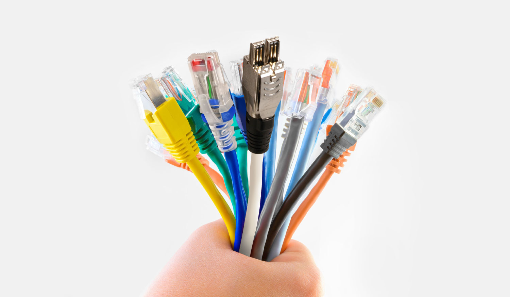

El cableado es un elemento fundamental en la estructura de redes y comunicaciones, y existen diversos tipos de cableado para transmitir datos, voz y otros tipos de señales. Estos tipos de cableado varían en términos de capacidad de transmisión, aplicaciones específicas y características físicas.

Algunos tipos de cable
Cable coaxial
Cable formado por un hilo protegido de las corrientes eléctricas externas por una malla de cobre. Es económico y puede alcanzar velocidades de transmisión media. Actualmente está en desuso.
Cableado de par trenzado
Está constituido por cuatro pares de hilos trenzados para evitar la interferencia eléctrica de los otros pares. Es económico y permite alcanzar una buena velocidad de comunicación. Necesita conectores RJ-45.
Fibra óptica
La fibra óptica transporta pulsos de luz a través de pequeñas fibras de vidrio, por lo que no le afectan las corrientes externas. Estos cables constan de dos hilos de fibra de vidrio (cada uno transmite en una sola dirección) protegidos por fibras de Kevlar y capas de plástico. Es caro, pero permite alcanzar velocidades de transmisión muy elevadas y su longitud puede ser muy extensa.
El cable coaxial es un tipo de cable que se utiliza para transmitir señales eléctricas, especialmente en aplicaciones de telecomunicaciones y transmisión de datos. Se compone de varios componentes que trabajan juntos para proporcionar una transmisión de señal eficiente y protegerla de interferencias externas. A continuación, te explicaré los componentes y el funcionamiento básico de un cable coaxial:
Núcleo conductor central: En el centro del cable coaxial se encuentra un conductor metálico sólido o trenzado. Este conductor transporta la señal eléctrica que se desea transmitir. En aplicaciones de cable coaxial, este conductor suele estar hecho de cobre o aluminio, y la elección del material depende de la aplicación específica.
Aislante dieléctrico: Alrededor del núcleo conductor central se encuentra una capa de material aislante llamada dieléctrico. Este dieléctrico tiene la función de mantener una separación constante entre el núcleo conductor y la malla exterior. El dieléctrico evita que la señal eléctrica se escape y ayuda a mantener una impedancia característica constante en el cable.
Malla metálica o blindaje: Sobre el aislante dieléctrico se coloca una malla metálica que actúa como blindaje. Este blindaje ayuda a proteger la señal dentro del cable de interferencias externas y evita la emisión de señales que puedan causar interferencias en otros dispositivos cercanos. El blindaje también proporciona una vía de retorno para las corrientes de tierra y reduce la interferencia electromagnética.
Cubierta externa: La parte exterior del cable coaxial está cubierta por una capa aislante adicional, que generalmente es de plástico. Esta cubierta protege el cable y le da resistencia física, lo que lo hace adecuado para su uso en una variedad de entornos.
El funcionamiento básico del cable coaxial implica que la señal eléctrica viaje a lo largo del núcleo conductor central, rodeado por el dieléctrico que mantiene la separación constante entre el conductor central y la malla de blindaje. La malla de blindaje protege la señal de interferencias externas y evita que la señal se irradie hacia el entorno.
Los cables coaxiales se utilizan en diversas aplicaciones, como la transmisión de señales de televisión por cable, conexiones de Internet de banda ancha, sistemas de videovigilancia, comunicaciones de radiofrecuencia, entre otros. Hay diferentes tipos de cables coaxiales diseñados para aplicaciones específicas, y la elección del cable adecuado dependerá de los requisitos de la aplicación y las características necesarias de transmisión de la señal.
El cableado de par trenzado es un tipo de cable utilizado comúnmente en redes de comunicación, como Ethernet, para transmitir datos. Consiste en pares de cables de cobre entrelazados, donde cada par se compone de dos hilos de cobre aislados. Estos pares se enrollan juntos para reducir la interferencia electromagnética y mejorar la calidad de la transmisión de datos. El término "par trenzado" se refiere a la forma en que los cables se retuercen entre sí.
Hay dos tipos principales de cableado de par trenzado: cableado de par trenzado sin blindaje (UTP, por sus siglas en inglés) y cableado de par trenzado apantallado (STP, por sus siglas en inglés). Aquí te explico brevemente cómo funcionan y en qué se diferencian:
1. Cableado de par trenzado sin blindaje (UTP):
- Este tipo de cable utiliza pares de cables de cobre sin ninguna capa de blindaje protector.
- Los pares de cables se trenzan juntos para reducir la interferencia electromagnética y mejorar la calidad de la señal.
- Se utiliza ampliamente en redes Ethernet, como Cat5e, Cat6, Cat6a y Cat7, con velocidades de transmisión de datos que varían según la categoría.
- UTP es adecuado para entornos de oficina y hogar, donde la interferencia electromagnética no suele ser un problema importante.
2. Cableado de par trenzado apantallado (STP):
- El STP utiliza pares de cables de cobre entrelazados, pero cada par está envuelto en una capa de blindaje metálico para proteger contra la interferencia electromagnética.
- Esta capa de blindaje agrega una capa adicional de protección contra interferencias y puede utilizarse en entornos más propensos a la interferencia, como entornos industriales o áreas con cables eléctricos cercanos.
- Se utiliza menos comúnmente que el UTP debido a su costo y complejidad adicional.
En ambos casos, los cables de par trenzado se conectan a conectores RJ-45 en sus extremos, que se utilizan para conectar dispositivos de red, como computadoras, conmutadores (switches) y enrutadores. Además, los cables de par trenzado generalmente se instalan en sistemas de cableado estructurado, como redes de área local (LAN) y sistemas de cableado de edificios.
Es importante seleccionar el tipo de cableado de par trenzado adecuado según las necesidades de tu red y el entorno en el que se utilizará, ya que la elección puede afectar la calidad de la señal y la velocidad de transmisión de datos.
La fibra óptica es un medio de transmisión de datos que utiliza la luz para transmitir información a través de un cable de vidrio o plástico extremadamente delgado. Funciona aprovechando el principio de la reflexión total interna, que permite que la luz se propague a lo largo de la fibra sin escapar, lo que la hace muy eficiente en la transmisión de datos a largas distancias y a altas velocidades.
Estos son algunos de los elementos clave de la fibra óptica:
1. Núcleo: En el centro de la fibra óptica se encuentra el núcleo, que es la parte más delgada y transparente del cable. La luz viaja a través del núcleo de la fibra.
2. Revestimiento: El núcleo está rodeado por una capa llamada revestimiento. El revestimiento tiene un índice de refracción ligeramente menor que el núcleo, lo que permite la reflexión total interna de la luz en el núcleo.
3. Reflectores internos: La luz que se introduce en el núcleo de la fibra incide en el límite entre el núcleo y el revestimiento en un ángulo específico. Si este ángulo es suficientemente pequeño, la luz se refleja completamente en el límite y no se escapa, lo que permite la transmisión de la señal a lo largo de la fibra sin pérdida de intensidad.
4. Modulación de la luz: Para transmitir datos, se utiliza un proceso llamado modulación de la luz. Esto implica cambiar la intensidad o la frecuencia de la luz para representar información binaria (ceros y unos), que corresponde a la transmisión de datos.
5. Transceptores: En ambos extremos de la fibra óptica, se utilizan dispositivos electrónicos llamados transceptores para convertir las señales eléctricas en señales de luz (para la transmisión) y viceversa (para la recepción).
Las ventajas de la fibra óptica incluyen una alta capacidad de transmisión de datos, una velocidad de transmisión rápida, una resistencia a las interferencias electromagnéticas y una menor pérdida de señal en comparación con otros medios de transmisión, como el cable de cobre. Se utiliza ampliamente en redes de comunicación, como redes de telecomunicaciones, Internet de alta velocidad, transmisión de video y más. La fibra óptica ha revolucionado la forma en que compartimos información y se ha convertido en un pilar fundamental de la infraestructura de comunicación global.